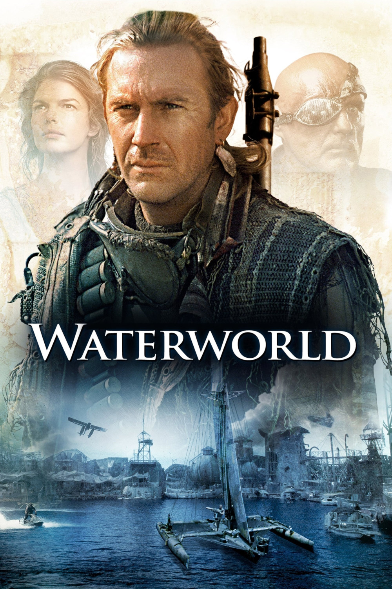

Мировая премьера: 28 июля 1995
Слоган: Тайна новой жизни скрыта за горизонтом.
Сюжет: В результате ядерной катастрофы ледники растаяли, и почти вся суша погрузилась под воду. Осталось лишь несколько плавучих городов, жители которых никогда не видели землю. Единственной и абсолютной ценностью на бескрайних океанических просторах становится пригодная для выращивания пищи почва. Мореход, зарабатывающий на жизнь поисками земли, узнаёт о том, что легенда о существовании некой загадочной суши вполне реальна. Но карта, указывающая путь к заветной цели, оказывается объектом притязаний морских пиратов.
Режиссёр: Кевин Рейнольдс
В ролях: |
Кевин Костнер | Мореход |
| Деннис Хоппер | Дьякон | |
| Джинн Трипплхорн | Хелен | |
| Тина Мажорино | Энола | |
| Майкл Джетер | Грегор | |
| Джерард Мёрфи | Норд | |
| Ким Коутс | Торговец | |
| Р.Д. Колл | Миротворец | |
| Джон Флек | Доктор | |
| Зитто Казанн | Старейшина | |
| Роберт Джой | Счетовод | |
| Джек Блэк | Пилот | |
| Закес Мокае | Приам | |
| Саб Симоно | Старейшина | |
| Джек Келер | Банкир | |
| Рик Авилес | Привратник | |
| Джон Тоулс-Бей | Пулемётчик на самолёте |
Бюджет: $ 175 млн.
Кассовые сборы в США: $ 88 млн.
Кассовые сборы в мире: $ 264 млн.
Продолжительность: 2 ч. 7 мин.
Рейтинг: 6.3